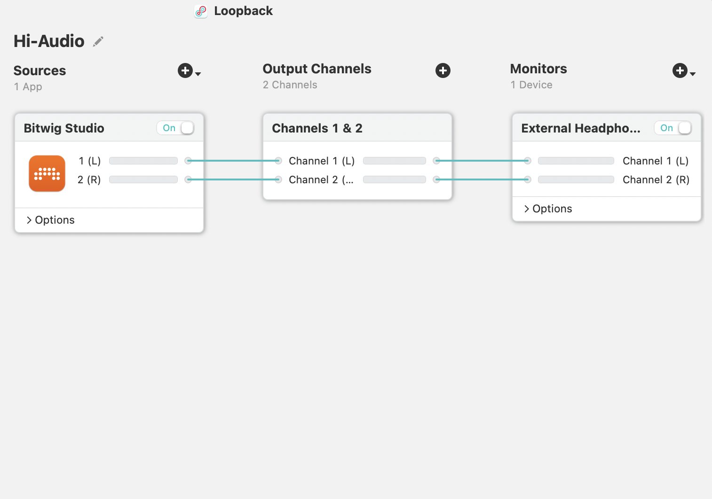
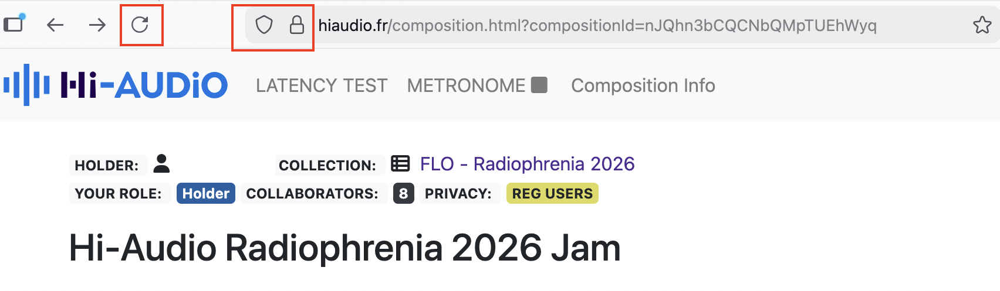
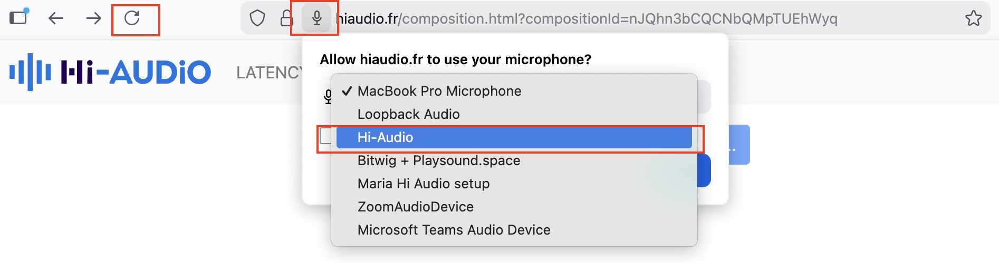
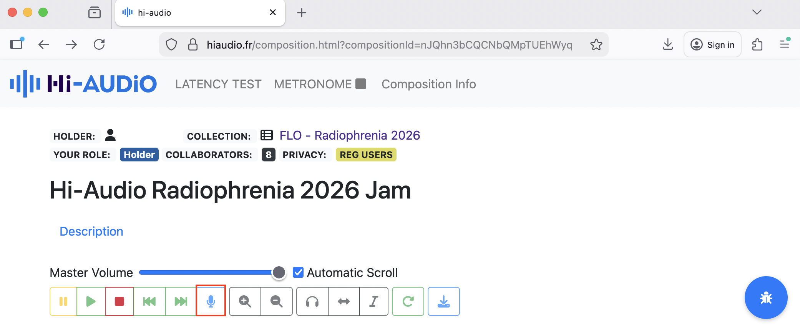
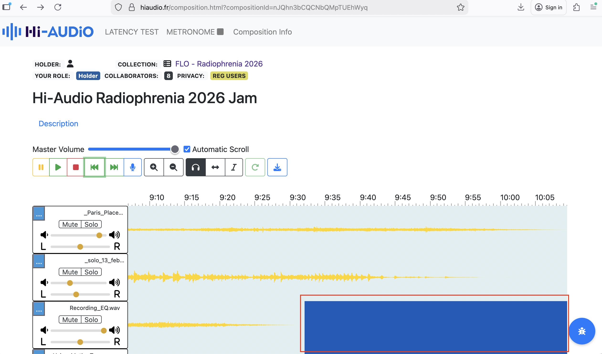
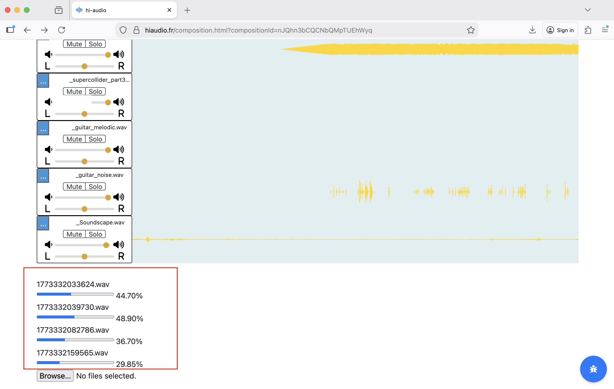
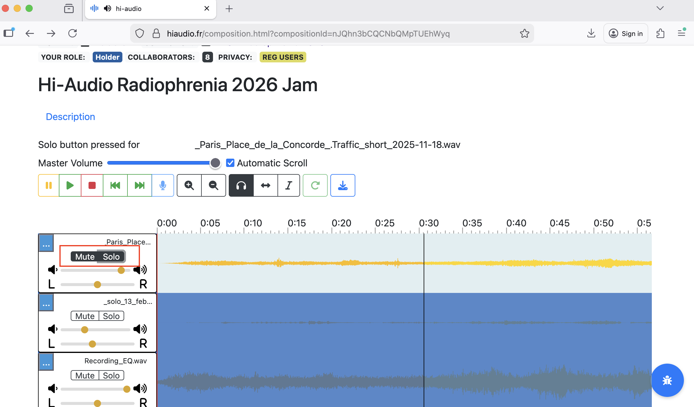
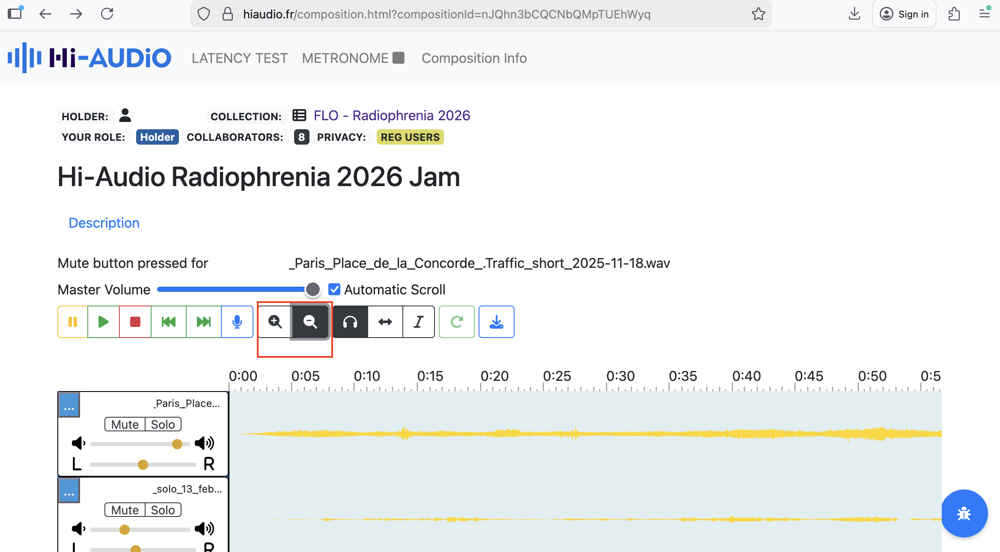

Practice-Based Evaluation: Hi-AUDiO
Summary #
This memo outlines findings from a practice-based evaluation of the Hi-AUDiO platform, conducted by nine performers from the Female Laptop Orchestra (FLO). The evaluation took place between February 13, 2026, and March 13, 2026, during the production of a collaborative composition intended for the Radiophrenia 2026 festival broadcast. While the platform demonstrated strong accessibility and ease of onboarding through its browser-based design, several workflow limitations were identified when used in a professional context. The observations presented below translate participant feedback into design considerations that may inform future development of the platform.
1. Purpose of This Memo #
The purpose of this memo is to present findings from a practice-based expert evaluation of the Hi-AUDiO platform conducted through artistic use rather than task-based usability testing. The goal of the evaluation was to assess the platform’s suitability for real-world creative workflows, identify strengths and limitations and highlight design considerations relevant to advanced users and artistic contexts. By synthesising qualitative feedback gathered through the evaluation process, the memo identifies workflow bottlenecks and outlines considerations that may inform future platform development and research dissemination.
2. Evaluation Context #
2.1 User Profile #
The evaluation was conducted by nine members of the Female Laptop Orchestra (FLO), including the FLO Lab director listed above as the ‘Evaluator’. Female Laptop Orchestra (FLO) is an internationally distributed ensemble that regularly incorporates emerging technologies into compositions, recordings, and performances. Within this ecosystem, FLO Lab operates as a practice-based research initiative where new audiovisual tools are tested and evaluated from both artistic and technical perspectives.
Most FLO members hold academic positions in music, sound, HCI, and related fields, along with extensive experience in the use of professional Digital Audio Workstations (DAWs) and experimental research-stage Web Audio platforms in Networked Music Performance (NMP). This positions FLO, and by extension FLO Lab, as a research-literate group of expert practitioners capable of adapting to diverse creative and technical workflows without formal training.
2.2 Use Case #
In this evaluation, the Hi-AUDiO platform was used for remote asynchronous recording of 16 audio tracks by FLO members based in Australia, Brazil, Croatia, France, Italy, Poland, Slovakia, Spain and the UK. The recordings were intended as source material for a collaborative composition that would later be mixed offline and submitted to the Radiophrenia 2026 festival.
Individual recording sessions involved the use of acoustic and electronic instruments, percussion, vocals (utilising audio interfaces and Loopback software for internal audio routing to Firefox), as well as live coding and binaural soundscape recordings.
The workflow also involved downloading recordings from the Hi-AUDiO platform, converting and importing them into performers’ Digital Audio Workstations (DAWs) for additional DSP processing using audio plug-ins and AI-based tools. The processed material was subsequently uploaded back to the platform.
As the resulting composition is intended for broadcast at a professional music festival, the project also provides a potential dissemination context for the Hi-AUDiO platform and the associated research project initiative.
2.3 Scope #
The evaluation focused on the recording interface, transport controls, visual feedback, file management, creative flow and suitability for professional contexts.
3. Methodological Approach #
Seven FLO members were onboarded to the Hi-AUDiO platform by the Lead Software Engineer, across two separate two-hour sessions. Two additional FLO members were onboarded by the FLO Lab director, who also coordinated the recording process, organised scheduling, assisted with troubleshooting, and collected participant feedback throughout the evaluation period. The onboarding sessions introduced the platform interface, conducted latency tests, and examined signal flow across different recording configurations.
Following onboarding, the FLO Lab director created a private Collection titled “FLO - Radiophrenia 2026” and Composition within that Collection titled “Hi-Audio Radiophrenia 2026 Jam.”
The remaining eight performers were invited as members using the Composition Info section, which generated automated email invitations from the Hi-AUDiO platform. Upon registration, participants were able to navigate directly to the shared recording session workspace.
All tracks were recorded and uploaded between February 13, 2026, and March 3, 2026. The mixing phase took place between March 3 and March 13, 2026. A detailed recording timeline is provided in the Appendix.
The FLO Lab evaluation approach prioritises ecological validity. Rather than relying on controlled usability tasks, the evaluation followed a practice-based research methodology grounded in real creative activity. Insights were generated through hands-on use of the platform during individual recording sessions, reflecting observations during and after these sessions, and informal comparison with existing tools and workflows.
Communication between participants took place through a dedicated WhatsApp group created specifically for the testing period, ensuring that discussions related to the Hi-AUDiO platform did not overlap with other FLO projects. WhatsApp was chosen over email to enable rapid communication and troubleshooting during recording sessions. Issues encountered by performers were addressed either directly by the FLO Lab director or communicated to the Lead Software Engineer where necessary.
The collected material included notes taken during onboarding and recording sessions, informal feedback regarding technical issues encountered during the creative process (such as signal-flow challenges or interface inconsistencies), and suggestions for platform improvement. The following sections summarise the key insights derived from this material.
4. Platform Strengths #
This section highlights aspects of the Hi-AUDiO platform that effectively supported the collaborative workflow used by FLO members during the evaluation.
4.1 Accessibility #
The browser-based architecture was identified as a major strength. Participants noted that the ability to access the recording environment without installing dedicated software significantly lowers the barrier to entry for geographically distributed collaborators and supports cross-platform participation.
4.2 Ease of Use #
Despite the early-stage nature of the platform, the core recording interface was described by several FLO members as “simple and easy to use” for basic recording tasks. This simplicity contributed positively to the onboarding process and allowed performers to begin recording relatively quickly.
4.3 Interface Discoverability #
Hover-over labels for interface buttons (e.g., the Stop control) were noted as helpful in supporting initial orientation within the platform. These small interface cues helped compensate for the absence of some familiar DAW conventions.
4.4 Track Annotation #
The ability to attach notes and annotations to individual tracks supported communication between geographically distributed performers. Participants found this feature particularly useful when explaining recording conditions, signal chains, or artistic intentions associated with individual contributions.
5. Observed Workflow Challenges #
This section summarises workflow limitations encountered during the evaluation. The observations reflect issues that became visible during real creative use of the platform rather than controlled usability testing.
5.1 Visual Feedback and Interface Clarity #
Several interface elements lacked clear state-change indicators, which occasionally caused uncertainty during recording sessions.
For example, the Mute and Solo buttons did not provide sufficiently visible confirmation when active. Similarly, the microphone icon used to initiate recording differed from the conventional “record” symbol familiar to most Digital Audio Workstation (DAW) users. Because FLO members were typically recording through external audio interfaces rather than internal microphones, this icon initially caused confusion regarding its function.
In addition, the visual change indicating that recording had started was extremely subtle. In practice, the transport bar appeared slightly lighter after activation; however, this change was difficult to perceive on many displays and in many lighting conditions, making it unclear whether recording had begun.
Some performers also noted that dark-blue waveform segments representing silence could be mistaken for inactive or missing audio.
5.2 Transport Controls and Navigation #
Participants reported several missing features commonly found in professional audio software that affected workflow efficiency.
The absence of standard keyboard shortcuts—most notably the Spacebar for Play/Stop—was reported as slowing down recording sessions because performers needed to move the cursor repeatedly between recording areas and the transport bar.
Fast Forward and Rewind controls also appeared to jump directly to the beginning or end of the timeline rather than moving incrementally through the recording. This behaviour differed from typical DAW navigation patterns.
Zoom controls were described as somewhat unresponsive, and the function of the headphones icon (Select Cursor) was not immediately clear to some participants.
5.3 Recording Workflow Limitations #
Several limitations affected the flexibility of the recording process.
Participants noted the absence of a pause-and-continue recording option, which would allow performers to temporarily stop recording while maintaining continuity within a single track. Such functionality is widely used in iterative recording workflows.
The platform also lacked visible input gain control, which was described as critical when working with external recording chains.
5.4 Editing and Audio Manipulation #
Participants identified the absence of basic non-destructive editing tools as a major limitation.
Common operations such as cutting, trimming, or pasting audio regions—normally performed through shortcuts such as Cmd/Ctrl+C and Cmd/Ctrl+V—were not supported. As a result, several editing tasks had to be deferred to external Digital Audio Workstations during the final mixing stage.
Similarly, the lack of volume automation or envelope control made it difficult to manage the dynamic balance between tracks or perform basic crossfades directly within the platform.
5.5 Timeline Manipulation #
The “Shift Audio in Time” feature allowed clips to be repositioned, but participants noted that it was possible to accidentally move audio backwards on the timeline without clear safeguards. Once moved, it was difficult to determine whether the audio had been returned precisely to its original starting position.
5.6 Signal Flow and Rendering Stability #
Some participants experienced long rendering times and occasional audio-quality issues when working with complex signal chains.
For example, sessions using internal routing tools such as Loopback occasionally produced clipping, digital artefacts, or signal-level drops. These behaviours were particularly noticeable when longer processing chains were involved.
5.7 Interaction Design and Gestural Support #
Participants also noted the absence of several common interaction gestures. For example, pinch-to-zoom functionality was not supported, which limited the ability to quickly inspect waveform details during recording sessions.
5.8 File Interoperability #
The use of .m4a lossy audio formats created friction when exporting files to professional DAWs for offline processing. Several participants reported that this required additional conversion steps before further editing or mixing could take place.
5.9 Track Management #
Participants also noted that renaming tracks within the interface was not immediately intuitive, which occasionally slowed down the organisation of recording sessions.
6. Design Implications and Opportunities #
The observations outlined below translate participants’ testing experiences into design implications that may inform future development of the platform.
| Area | Observation | Impact on Workflow | Design Opportunity |
|---|---|---|---|
| Accessibility | Browser-based access enabled participants to join recording sessions without installing dedicated software. | Lowered barriers to participation for geographically distributed performers. | Maintain browser-first architecture while expanding professional recording features. |
| Interface Clarity | Some interface elements lacked clear state-change indicators (e.g., Mute, Solo, Record). | Users were occasionally unsure whether functions were active during recording. | Introduce clearer visual feedback (colour change, animation, or active-state highlighting). |
| Recording Controls | Recording was initiated via a microphone icon rather than a conventional DAW record symbol. | Initial confusion regarding recording status, especially for users working with external interfaces. | Consider adopting industry-standard recording iconography or supplementing with clearer status indicators. |
| Transport Controls | Standard DAW shortcuts such as Spacebar for Play/Stop were not available. | Slowed down workflow during recording sessions due to repeated cursor navigation. | Introduce keyboard shortcuts for commonly used transport functions. |
| Recording Workflow | No option to pause recording and continue within the same track. | Interrupted iterative recording workflows and required multiple takes. | Implement pause/continue recording functionality. |
| Input Control | Lack of visible input gain controls within the interface. | Limited ability to adjust recording levels during sessions. | Introduce basic input level monitoring and gain control tools. |
| Editing Capabilities | Absence of non-destructive editing tools such as cut, trim, and paste operations. | Participants needed to export files to external DAWs for basic editing tasks. | Implement lightweight editing tools or improved integration with external DAWs. |
| Automation | No volume envelopes or crossfade functionality. | Dynamic control and transitions had to be performed during offline mixing. | Add basic automation or envelope-based gain control. |
| Timeline Manipulation | “Shift Audio in Time” allowed accidental misalignment of clips without safeguards. | Difficult to reposition clips precisely during recording sessions. | Add snap-to-grid options or timeline alignment markers. |
| Navigation | Zoom controls were perceived as slow or unresponsive; pinch-to-zoom gestures not supported. | Reduced efficiency when navigating longer recordings. | Improve zoom responsiveness and support gesture-based navigation. |
| Signal Processing | Complex signal chains occasionally caused rendering delays and audio artefacts. | Interrupted creative flow during recording sessions. | Improve stability when handling longer or more complex audio routing pipelines. |
| File Interoperability | Audio files exported in .m4a lossy format. | Required conversion before import into professional DAWs. | Offer optional export in lossless formats such as WAV. |
| Track Management | Renaming tracks was not immediately intuitive. | Slowed organisation of multi-track sessions. | Simplify track naming workflow and improve visibility of track metadata. |
| Collaboration | Track annotations supported communication between performers. | Improved clarity when sharing recordings across distributed participants. | Expand annotation tools for collaborative documentation. |
7. Assessment of Platform Fit for Professional Creative Workflows #
In its current iteration, the Hi-AUDiO platform functions primarily as a lightweight multitrack recording environment rather than a fully featured creative production system.
The platform’s web-based simplicity is a clear strength; however, the absence of core editing capabilities (e.g., cut, trim, paste) and dynamic control tools (e.g., automation envelopes) limits its suitability for end-to-end professional production workflows.
For the Female Laptop Orchestra (FLO) to adopt Hi-AUDiO as a regular tool for distributed composition, further development would be required to support non-linear editing, advanced signal control, and workflow features aligned with established professional audio practices.
8. Key Findings and Next Steps #
The collective feedback identifies a gap between the current feature set and the requirements of professional creative workflows. While usability and onboarding are promising, several foundational features would significantly enhance suitability for advanced use.
The most critical areas for development include improved visual feedback for active states, implementation of standard keyboard shortcuts, support for uncompressed export formats, and basic non-destructive editing tools (e.g., cut, trim, and envelope control).
8.1 Key Findings #
The browser-based architecture significantly lowers barriers for distributed collaboration.
Insufficient visual state indicators (e.g., mute, solo, record) occasionally created uncertainty during recording sessions.
Absence of industry-standard shortcuts and editing tools reduced workflow efficiency for experienced DAW users.
Exporting in lossy formats introduced additional conversion steps when integrating recordings into professional production environments.
Despite these limitations, the platform demonstrates strong potential as a lightweight collaborative recording environment if expanded with core workflow features.
8.2 Potential for Future Collaboration #
This evaluation illustrates the value of engaging expert practitioner-users during early-stage development of creative technologies, complementing other forms of testing such as lab-based studies.
Practice-based evaluations can reveal workflow dynamics, embodied interaction patterns, and creative constraints that are difficult to capture through surveys or task-based metrics alone, particularly for platforms intended for artistic, research, or professional contexts.
Continued collaboration between the FLO Lab initiative and the Hi-AUDiO research team could support iterative development, artistic experimentation, and potential dissemination through performances, broadcasts, and academic publications.
9. Acknowledgements #
The evaluator would like to thank the members of the Female Laptop Orchestra (FLO) for participating in this evaluation, and the Hi-AUDiO team (Lead Software Engineer and Principal Investigator), for providing access to the platform, technical support, and openness during the evaluation period.
The evaluator would also like to thank the Female Laptop Orchestra (FLO) sponsors Bitwig Studio, PreSonus, Røde Microphones, Audio-Technica, Waves, NETGEAR, and Rogue Amoeba for providing software and hardware used in the evaluation process.
Appendix A #
Introduction, Onboarding, and Evaluation Timeline #
This timeline documents the procedural sequence of onboarding, recording, and post-production activities conducted during the evaluation period.
2025 — Project Initiation
05/12 – meeting (Lead Software Engineer; Principal Investigator; FLO Lab director)
09/12 – Hi-AUDiO platform demonstration (Lead Software Engineer; FLO Lab director)
2026 — Onboarding Phase
29/01 – Onboarding Session 1 (Lead Software Engineer; FLO Lab director)
30/01 – Editing guide track (binaural soundscape) from 20 to 10 minutes due to file size restriction; uploading guide track to Hi-AUDiO
30/01 – Onboarding Session 2 (Lead Software Engineer; FLO Lab director; three FLO members)
04/02 – Onboarding Session 3 (Lead Software Engineer; FLO Lab director; three FLO members)
05/02 – Onboarding Session 4 (FLO Lab director; one FLO member)
06/02 – Onboarding Session 5 (FLO Lab director; one FLO member)
2026 — Recording and Processing Phase
13/02 – FLO planning meeting
14/02-16/02 – Recording individual voice tracks in participants’ native languages using varied recording setups
17/02-19/02 – Downloading and converting guide track; importing into Ableton; mixing and processing individual voice recordings; translating materials into English; uploading processed tracks to Hi-AUDiO platform
20/02 – Downloading processed tracks, AI-based processing, re-uploading selected material
21/02-03/03 – Recording instrumental and electronic parts (piano, CubeHarmonic, cello tracks, percussion, SuperCollider, soundscape)
04/03 – Obtaining .wav files from the Lead Software Engineer
09/03-13/03 – Final mixing and mastering
Appendix B #
Platform Use and Interface Observations #
The screenshots below provide visual documentation of interface states, workflow interactions, and usability observations identified during the practice-based evaluation. They complement the findings presented in Section 5.















